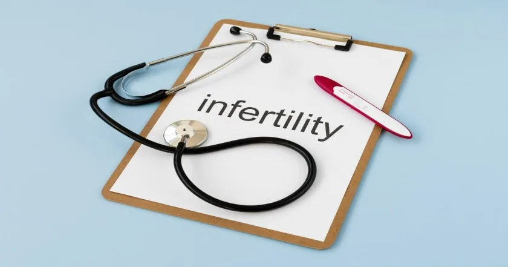
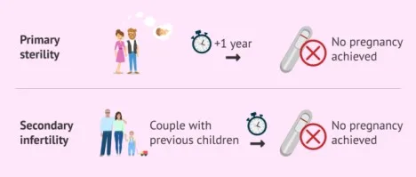
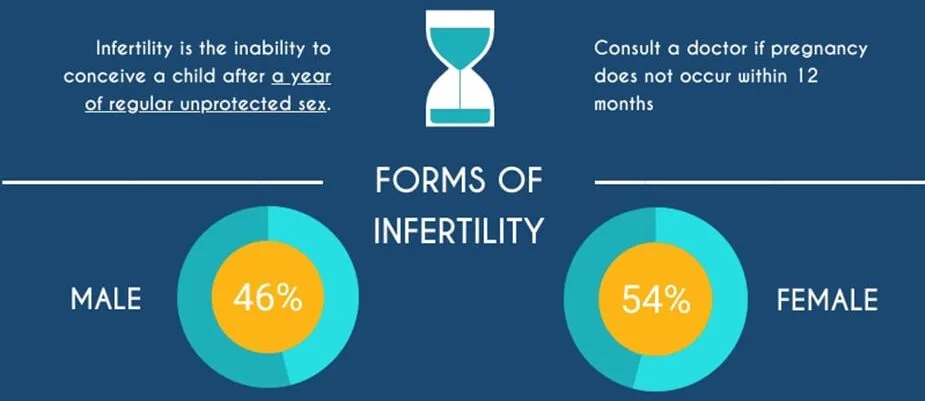
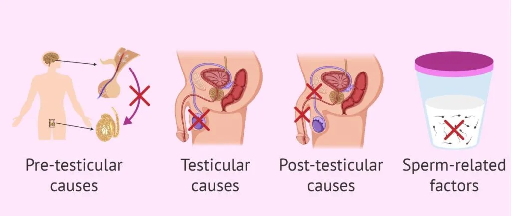
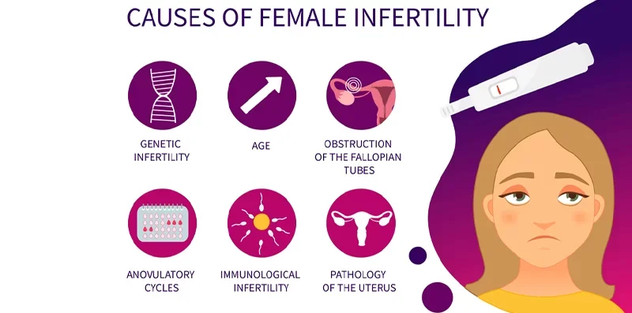
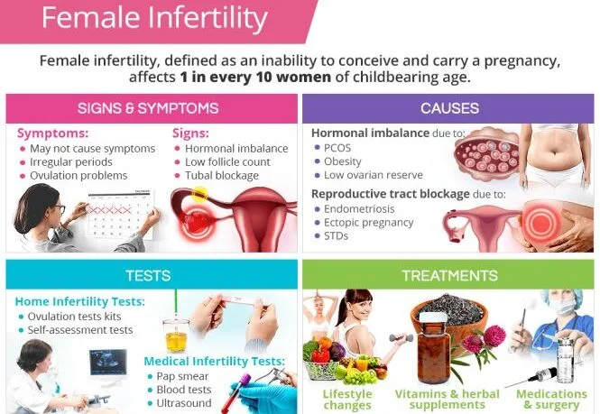
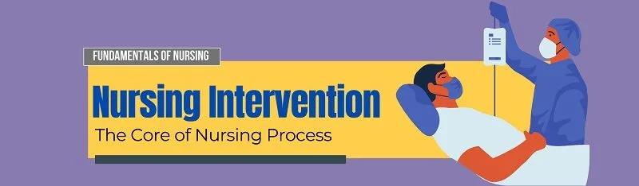

Expanded Nursing Uganda Explanation
Infertility should be understood beyond a short definition. Link the concept to patient history, focused assessment, common risks, nursing priorities, documentation and evaluation of outcomes.
Contents, 14 sections (tap to expand)
01 INFERTILITY
Infertility refers to failure to conceive in spite of regular unprotected sex during the child bearing age that is 15-49 years without any contraception for at least one year.
02 Types of infertility
Primary infertility
- Primary infertility is the inability to conceive in a couple that has had no previous pregnancies .
- Primary infertility is the term used for a couple who have never achieved a pregnancy at any time after 1 year of unprotected sex.
Secondary infertility
- Secondary infertility is where one has ever conceived but then stops to produce when she is not on any method of family planning.
- Secondary Infertility also refers to a couple who have previously succeeded in achieving at least one pregnancy even if this ended in spontaneous abortion being unable to conceive again.
03 Forms of Infertility
Male Infertility
- Male infertility means a man is not able to start a pregnancy with his female partner.
Female Infertility
- Female infertility is defined as not being able to get pregnant (conceive) after one year (or longer) of unprotected sex.
04 Causes of infertility
- Depression : Mental health conditions, such as depression, can affect the ability of a man to engage in sexual intercourse since it can affect sustaining an erection. Stress and emotional factors may contribute to the release of immature or abnormal sperm.
- Poor Sperm Movement: Factors like extreme heat, prolonged fever, or exposure to excessive heat can reduce sperm count, impair movement, and increase the number of abnormal sperm in semen.
- Ejaculation Issues : Difficulties in ejaculation, including poor or failed ejaculation, can contribute to male infertility.
- Hydrocele : Excessive fluid collection in the scrotum (hydrocele) can hinder proper sperm production, impacting fertility.
- Varicocele : Varicose veins in the scrotum can affect blood supply and drainage, leading to increased temperatures and reduced sperm production. It may also impact ejaculation.
- Drug-Induced Erectile Dysfunction: Certain medications, such as amebicides, anti-hypertensives (e.g., aldomet), and diabetic drugs, may cause erectile dysfunction, contributing to infertility.
- Diseases like Mumps : Mumps can lead to orchitis, an inflammation of the testes, affecting sperm production.
- Hormonal Imbalance : Inadequate production of testosterone hormone can result in the production of immature sperm.
- Degenerative Changes in Sperm : Nitrofurantoin, a medication, can cause degenerative changes in sperm.
- Lifestyle Factors: Excessive smoking, alcohol consumption, and obesity can negatively impact sperm quality and fertility.
- Retrograde Ejaculation : Ejaculation into the bladder can occur, affecting fertility. This can be assessed through urinalysis after ejaculation.
- Exposure to Toxins : Exposure to toxic chemicals or radiation can adversely affect spermatogenesis.
- Genetic Factors: Genetic conditions like Klinefelter’s syndrome (XXY chromosomes) and Turner’s syndrome (45XO chromosomes) can lead to infertility in males.
Are best discussed under the following headings;
- Defective Implantation
- Endocrine Disorders
- Ovarian Disorders
- Defective Transport
- Physical / Psychological Disorders
- Systemic Disorders
DEFECTIVE IMPLANTATION
Major cause is tubal blockage due to PID (in Uganda especially). This contributes to 60 – 70%.
- Salpingitis caused by infection after abortion or delivery by gonorrhoea, chlamydia or tuberculosis or by pelvic peritonitis from acute appendicitis may damage the tubal epithelium and in severe cases bring about tubal blockage. When the tubes are not completely blocked, fertilization of the ovum may still take place but because of the damage to the ciliated epithelium the fertilized ovum may not be carried down the tube to the uterus and an ectopic pregnancy results.
- Abnormalities of the uterus. Some people are born with no uterus or with a bicornuate uterus or Didelphys uterus with 2 horns).
- Tubal factors eg tubal blockage due to adhesions resulting from STIs.eg gonorrhoea
- Uterine fibroids : Large uterine fibroids can cause irregular implantation surfaces.
- Endometrial Abnormalities : Severe inflammation (endometritis) or intrauterine adhesions can affect implantation.
- Endometriosis : Presence of endometrial-like tissue outside the uterus can cause inflammation, scarring, and infertility.
- Over curettage of the uterus or surgery of the uterus i.e. Hysterectomy, Stenosed Cervix due to trauma or injury due to dilatation and curettage. May be acquired or congenital Gynatresia i.e. a very small hole with a blind end of the vagina.
ENDOCRINE DISORDERS
- Hormonal Inefficiency : Alterations in hypothalamic function due to stress, drugs, or weight changes can lead to anovulation.
- Prolactin Hormone Issues : Pituitary tumours causing excessive prolactin production can lead to anovulation.
- Thyroid and Adrenal Function : Changes in thyroid or adrenal function can result in anovulation.
- Age-Related Factors : Fertility declines with age, impacting women during menopause.
OVARIAN CAUSES
- Ovary Malfunction : Absence of FSH receptors or disturbances in FSH-follicle interaction can lead to anovulation or polycystic ovarian syndrome.
- Premature Menopause : Early cessation of ovarian function can result in infertility.
- Surgery and Infection : Surgical removal of ovaries or infections like PID can damage ovarian tissue.
DEFECTIVE TRANSPORT
- Allergy to the man’s sperms/cervical hostility – This is a condition in which the cervical mucus is unreceptive to spermatozoa either preventing their progressive advance or actually killing them. It may be due to infection or to the presence of sperm antibodies.
- Vaginal Ph : Acidic environment in the vagina destroying the motility of the sperms.
PHYSICAL/ PSYCHOLOGICAL CAUSES
Other conditions preventing union of ova and sperm in female are;
- Dyspareunia and Vaginismus : Painful intercourse (dyspareunia) or psychological conditions like vaginismus can affect conception.
- Physical Abnormalities : Physical abnormalities like a retroverted uterus can impact fertility.
- Psychological Factors : Stress, depression, and wrong timing of intercourse can influence fertility.
SYSTEMIC CAUSES
- Systemic Diseases : Diseases like diabetes, hypertension, and renal failure can affect reproductive health.
05 Conditions that should be fulfilled for implantation to occur.
For successful implantation to occur, the following conditions must be fulfilled:
- Two individuals engaging in unprotected sexual intercourse must be actively involved and share a mutual desire to conceive.
- The sexual intercourse should involve the right sexual route, with the male ejaculating healthy semen containing normal spermatozoa into the female’s vagina.
- Both individuals should be within the age range of conception, ranging between 14 to 49 years, to optimize the chances of successful fertilization and implantation.
- The female partner must release a normal, healthy ova from her ovary during her menstrual cycle.
- The released ovum must be fertilized by the sperm to form a zygote.
- The fertilized ovum, or zygote, must then successfully implant itself in the lining of the uterus to initiate pregnancy.
NOTE : It is important to note that the term “ sterility ” should only be used when there is no available treatment to enable a couple to conceive, such as in cases where a man lacks testes or a woman lacks a uterus.
06 GENERAL INVESTIGATIONS
All couples who complain of infertility should be investigated but the length to which the investigations should be carried out will vary. Both partners should be seen for the initial interview.
- Female Investigations Male Investigations
- 1. History Taking 1. General Physical Examination
- 2. Urinalysis 2. Medical History
- 3. Full Blood Count 3. Semen Analysis
- 4. Pelvic Ultrasound Scan 4. Scrotal Ultrasound
- 5. Hysterosonography 5. Hormone Testing
- 6. Laparoscopy 6. Post-Ejaculation Urinalysis
- 7. Cervical Mucus Analysis 7. Genetic Tests
- 8. Endometrial Biopsy 8. Testicular Biopsy
- 9. Testing for Tubal Patency 9. Specialized Sperm Function Tests
- – Tubal Insufflation/Rubin Test 10. Transrectal Scan
- – Hysterosalpingography
- 10. Ovarian Reserve Testing
- 11. Post Coital Test (Sims Huhner Test)
- Menstrual History : Menarche and length of menstrual periods.
- Gynaecological History:
- Previous contraceptive use and outcomes.
- History of procedures like dilatation and curettage, salpingectomy.
- Any history of abortions or suggestive Pelvic Inflammatory Diseases (PID).
- Previous obstetric history, including pregnancies and children fathered.
- Pelvic Infection History : History of pelvic infections.
- General Health and Nutrition: Assess general health and nutritional status.
- Age and Weight : Age of both partners and consider weight; very lean or obese women may face fertility challenges.
- Visual Examination : Assess hair distribution, including pubic hair and general body hair.
- Vaginal Examination : Confirm vaginal normality through visual examination and ultrasound.
- Hormonal Investigations:
- Check progesterone levels on day 21 of a 28-day cycle to assess ovulation.
- Serial ultrasound for ovulation.
- FSH and LH levels, especially in cases of premature menopause or ovary removal.
- Special Tests:
- Hysterosalpingogram to check tubal patency.
- Post-coital test to assess sperm allergy.
- Basal body temperature charting for ovulation confirmation.
- Examination of cervical mucus for ovulation characteristics.
- Blood progesterone level testing.
- Histology : Premenstrual endometrial biopsy to show secretory changes after ovulation.
- Laparoscopy : Tubal patency test, with methylene blue injection to observe spillage.
- Tubal Insufflation: Carbon dioxide test via the vagina, coupled with X-rays to assess blockages.
- Hysterosalpingogram : Radiographic test with opaque radio aqueous solution to check patency.
- Post-Coital Test ( Huhner’s Test ): Conducted around ovulation to assess sperm motility and quantity.
- Prolactin Tests : Conducted when prolactin levels are elevated.
- Endometrial Biopsy : Performed 10-12 days after ovulation.
- Transvaginal Ultrasound (TVS): Used for evaluation with certain contraindications and risks.
- Obesity Assessment : Check for associations with diabetes mellitus, hypertension, and infertility.
- Hair Distribution and Genitalia Development : Assess hair distribution and genitalia development.
- Undescended Testis : Check for undescended testes, with corrective surgery before puberty if necessary.
- Breast Examination : Check for breast enlargement indicating increased oestrogen levels.
- Testes Examination : Assess testis size and position.
- Blood Tests : Sperm Count/Seminal Fluid Analysis:
- Normal count is ≥20 million/ml; below 10 million may indicate an issue (oligospermia).
- Decreased androgen levels may indicate infertility.
- Volume : Normal volume is ≥2 ml or 2.5ml.
- pH : 7-8.
- Total Sperm Count : More than 20 million/ml.
- Liquefaction : Complete in 1 hour.
- Motility : ≥50% with forward motility.
- Morphology : 30% or more with normal shape.
- Concentration : ≥20 million/ml.
Note :
- Azoospermia : Lack of sperms in semen.
- Oligospermia : Few sperms, less than 20 million/ml.
- Asthenospermia : Decreased sperm motility.
- Teratospermia : Excessive abnormality of sperms in semen.
07 MANAGEMENT AND TREATMENT OF INFERTILITY.
Management of infertility involves a range of strategies, including
- Medication,
- Surgery,
- Artificial insemination, or advanced reproductive technologies.
The choice of treatment depends on factors such as;
- The cause of infertility,
- Age of the individual,
- Duration of infertility, and individual preferences.
Medical Management(Chemotherapy) : This Involves stimulating ovulation using fertility drugs. Fertility drugs regulate or stimulate ovulation. Fertility drugs are the main treatment for women who are infertile due to ovulation disorders.
Fertility drugs generally work like the natural hormones, follicle-stimulating hormone (FSH) and luteinizing hormone (LH), to trigger ovulation. They’re also used in women who ovulate to try to stimulate a better egg or an extra egg or eggs. Fertility drugs may include:
Clomiphene citrate :
- Clomiphene is taken by mouth and stimulates ovulation by causing the pituitary gland to release more FSH and LH, which stimulate the growth of an ovarian follicle containing an egg.
- Dose : Clomiphene Citrate (Clomid): 50mg daily for 5 days , with potential second course.
- The treatment is usually started on the fifth day of your menstrual period . But can still be taken at any time.
- If ovulation does not occur a second course of 100 mgs daily for 5 days may be given starting as early as 30 days after the previous one, In general 3 courses of therapy are adequate to assess whether ovulation is obtainable. Clomiphene induces ovulation by stimulating the Hypothalamic pituitary system.
Gonadotropins :
- Instead of stimulating the pituitary gland to release more hormones, these injected treatments stimulate the ovary directly to produce multiple eggs.
- Gonadotropin medications include human menopausal gonadotropin or hMG (Pregonal) or Pure FSH (Metrodin) may be used if clomiphene has failed.
- Another gonadotropin, human chorionic gonadotropin is used to mature the eggs and trigger their release at the time of ovulation.
- Administered via syringe pump every 90 minutes to trigger ovulation. 10-25 micrograms released via a syringe pump every 90 minutes. It’s given intravenously or subcutaneously.
- The treatment is continued throughout the menstrual cycle
- The success rate of 60-70% has been shown.
- Concerns exist that there’s a higher risk of conceiving multiples and having a premature delivery with gonadotropin use.
Metformin :
- Metformin is used when insulin resistance is a known or suspected cause of infertility, usually in women with a diagnosis of Polycystic ovary syndrome (PCOS). Metformin helps improve insulin resistance, which can improve the likelihood of ovulation.
Letrozole :
- Letrozole belongs to a class of drugs known as aromatase inhibitors and works in a similar fashion to clomiphene.
- Letrozole may induce ovulation. However, the effect this medication has on early pregnancy isn’t yet known, so it isn’t used for ovulation induction as frequently as others.
- One study found that 27.5% of women who took letrozole achieved a successful birth. Other studies suggest that compared to women who took Clomid, women who took letrozole had higher rates of ovulation, pregnancy, and live birth.
Bromocriptine :
- Bromocriptine(also called parlode lactodel, dopagon or Brameston), a dopamine agonist, may be used when ovulation problems are caused by excess production of prolactin (hyperprolactinemia) by the pituitary gland.
- Initially 1.25 mgs at bed time which is increased gradually to the usual dose of 2.5mgs 3 times a day with food. Increased if necessary to a maximum dose of 30 mgs daily.
Tamoxifen:
- Tamoxifen Is in the same class of medication as Clomiphene and works in a similar fashion. It has been shown to effectively induce ovulation in 65-75 percent of women, a rate similar to that of Clomid.
- Give Tamoxifen 20 mgs daily on days 2, 3, 4 and 5 of the menstrual cycles. Dose may be increased to 40 mgs the 80mgs.
Surgery
Tubal Blockage : Surgery is performed in an attempt to unblock them and remove adhesions. Success rate is low.
- Salpingolysis : This is when peritubal adhesions around the ampullary ends of the tubes are divided and function restored.
- Salpingostomy : This is when the fimbriae are turned back to produce a new opening of the tube.
- Tubal Anastomosis and Repair : This is usually done when the blockage is at the Isthmus. The blocked segment is incised and cut ends are anastomosed.
- Laparoscopic or hysteroscopic surgery : These surgeries can remove or correct abnormalities to help improve your chances of getting pregnant. Surgery might involve correcting an abnormal uterine shape, removing endometrial polyps and some types of fibroids that misshape the uterine cavity, or removing pelvic or uterine adhesions.
- Uterine, Cervix, or Vaginal Issues : Corrective surgeries, e.g., Myomectomy for uterine fibroids.
Surgical Interventions :
- Varicocele Correction : Surgical correction of varicoceles, common dilations of the spermatic veins, is a viable option.
- Vas Deferens Repair: Surgical procedures can address obstructions in the vas deferens, facilitating the passage of sperm.
- Vasectomy Reversal : Reversal procedures can be performed for individuals who had previously undergone vasectomies.
- Sperm Retrieval Techniques : In cases of absent sperm in ejaculate, direct retrieval from the testicles or epididymis using specialized techniques may be employed.
Management of Infections:
- Antibiotic treatments are considered to address reproductive tract infections, aiming to restore fertility. However, efficacy varies.
Addressing Sexual Dysfunction:
- Conditions like erectile dysfunction or premature ejaculation impacting fertility can be managed with medications or counseling.
Hormone Therapies and Medications:
- Hormone Replacement : In cases of hormonal imbalances affecting fertility, hormone replacement therapy may be recommended.
- Human Gonadotropin Therapy : Clomiphene citrate might be administered to stimulate sperm production.
- Testosterone Treatment : Prescribed to stimulate sexual desire, caution is exercised in cases of impaired spermatogenesis. It is administered subcutaneously or intramuscularly 2 to 3 times per week at doses of 2,000 to 3,000 international units (IU).
Surgical Measures:
- Reproductive Tract Obstruction Relief: Surgical procedures aim to alleviate obstructions in the reproductive tract.
- Inguinal Hernia Repair: Surgical correction is performed for inguinal hernias.
- Assisted Reproductive Technology (ART): ART involves various methods to obtain sperm, including normal ejaculation, surgical extraction, or from donor individuals.
Lifestyle Modifications:
- Diet and Exercise: Encouraging a healthy lifestyle with a balanced diet and regular exercise can positively impact sperm quality.
- Avoidance of Environmental Hazards : Minimizing exposure to environmental factors like toxins and excessive heat can contribute to improved fertility.
- Increase frequency of sex. Having sexual intercourse every day or every other day beginning at least 4 days before ovulation increases your chances of getting your partner pregnant.
- Have sex when fertilization is possible . A woman is likely to become pregnant during ovulation, which occurs in the middle of the menstrual cycle, between periods. This will ensure that sperm, which can live several days, are present when conception is possible.
- Advise the patient to avoid the use of lubricants. Products such as Astroglide or K-Y jelly, lotions, and saliva might impair sperm movement and function. Supplements with studies showing potential benefits on improving sperm count or quality include: Herbal supplements, Chewing dry coffee, Eating plenty of ground nuts, Chewing roots of herbal plants e.g. Mulondo.
Medications for Specific Conditions:
- Depending on the underlying causes, specific medications targeting conditions affecting fertility, such as anti-inflammatory drugs, may be prescribed.
In Vitro Fertilization (IVF):
- Developed in 1978, by Robert Edwards who received the nobel prize in Physiology for development of IVF. It is a type of Assisted reproductive technology.
- IVF is an infertility treatment for women unable to conceive naturally.
- Involves retrieving a healthy ovum from the woman or a donor, fertilizing it with sperms, and implanting the embryo in the uterus.
- Often results in multiple pregnancies due to transferring several fertilized ova to enhance implantation chances.
Intrauterine insemination (IUI).
- During an intrauterine insemination (IUI) procedure, sperm is placed directly into the uterus using a small catheter.
- The goal of this treatment is to improve the chances of fertilization by increasing the number of healthy sperm that reach the fallopian tubes when the woman is most fertile.
- During IUI, millions of healthy sperm are placed inside the uterus close to the time of ovulation.
Surrogate Parents:
- In situations where the woman lacks a uterus, her ova can be fertilized with the husband’s sperms and implanted in another woman’s uterus.
- As soon as the baby is born the surrogate mother hands over the child to the rightful parents.
Adoption of Children:
- If still eager to have children, they can visit an adoption centre, fill in forms and apply for adoption of a child of choice.
Artificial Insemination by a Sperm Donor (AID):
- Artificial insemination is often used by couples who have tried to conceive naturally for at least one year without success.
- Treatment for couples struggling with male fertility problems, including low sperm counts, decreased sperm motility, or ejaculation dysfunction disorders.
NURSING DIAGNOSES
- Anxiety and fear related to unknown procedures, treatment and outcome evidenced by the patient’s verbalization.
- Low self esteem related to inability to conceive evidenced by low mood, negative attitude and social isolation.
- Knowledge deficit related to the process of ovulation, pregnancy and sexual relationship evidenced by inadequate verbalization of correct sexual behavior information.
- Knowledge deficit related to sexual anatomy and physiology/ causes of infertility evidenced by inadequate verbalization of related information.
08 Nursing Interventions
- Assessment : Conduct a thorough assessment of the patient’s medical history, reproductive health, and lifestyle factors influencing fertility.
- Emotional Support : Provide empathetic support to address the emotional distress associated with infertility. Offer counseling or refer to mental health professionals when needed.
- Educational Guidance : Offer education about the various causes of infertility, available treatments, and assisted reproductive technologies (ART) to empower patients with knowledge.
- Lifestyle Modification : Collaborate with patients to identify and modify lifestyle factors that may impact fertility, such as smoking cessation, reducing alcohol intake, and maintaining a healthy diet.
- Medication Education : Educate patients on the proper administration, potential side effects, and expected outcomes of fertility medications prescribed..
- Fertility Monitoring : Instruct patients on methods of monitoring fertility, such as tracking ovulation cycles and recognizing fertile periods.
- Assistive Reproductive Technologies (ART): Explain the processes and options associated with ART, including in vitro fertilization (IVF), intracytoplasmic sperm injection (ICSI), and other advanced techniques.
- Infection Prevention : Emphasize the importance of preventing and treating reproductive infections that may contribute to infertility.
- Nutritional Counselling : Collaborate with a dietitian to provide nutritional counselling, ensuring patients are aware of the impact of diet on fertility and overall reproductive health.
- Sexual Health Education : Offer guidance on maintaining a healthy sexual relationship and addressing any concerns related to sexual dysfunction or discomfort.
- Monitoring Medication Adherence : Regularly assess and monitor the patient’s adherence to prescribed medications and treatments, addressing any concerns or challenges.
- Facilitate Support Groups : Arrange or recommend participation in support groups where patients can share experiences, coping strategies, and emotional support with others facing similar challenges.
- Referral to Specialist : Collaborate with fertility specialists, reproductive endocrinologists, or other healthcare professionals to ensure a multidisciplinary approach to care.
- Advocacy : Advocate for patients’ needs and ensure they have access to comprehensive fertility care, addressing any barriers or challenges they may face during the diagnostic and treatment process.
09 Prevention of Infertility
- Cease Smoking : Smoking is associated with reduced fertility in both men and women. Quitting smoking enhances reproductive health by improving sperm quality and reducing the risk of reproductive complications in women.
- Moderate Alcohol Consumption : Excessive alcohol intake can adversely affect fertility. Limiting alcohol consumption promotes overall reproductive well-being. It is advisable for both partners to maintain moderation.
- Adopt a Nutrient-Rich Diet: A well-balanced diet rich in essential nutrients supports reproductive health. Key elements include antioxidants, vitamins, and minerals that contribute to optimal hormonal balance and overall fertility.
- Timed Intercourse: Understanding the menstrual cycle and engaging in timed intercourse during the fertile window increases the chances of conception. Regular sexual activity throughout the menstrual cycle is encouraged.
- Stress Reduction Techniques : Chronic stress can impact fertility. Incorporating stress-reduction practices such as meditation, yoga, or mindfulness can contribute to a healthier reproductive environment.
- Maintain a Healthy Weight : Both obesity and being underweight can affect fertility. Maintaining a healthy weight through regular exercise and a balanced diet supports hormonal balance and reproductive function.
- Safe Sex Practices: Protecting against sexually transmitted infections (STIs) is crucial. STIs can lead to pelvic inflammatory diseases (PID) that may result in infertility. Consistent and correct use of barrier methods, like condoms, helps prevent STIs.
- Regular Health Check-ups : Routine health check-ups for both partners can detect and address potential reproductive health issues early on. Identifying and managing health conditions timely contributes to fertility preservation.
- Avoid Exposure to Environmental Toxins : Limit exposure to environmental pollutants and toxins, such as certain chemicals and radiation, which may impact fertility. Precautions in the workplace and living environment are essential.
- Manage Chronic Health Conditions : Proper management of chronic conditions like diabetes, hypertension, and thyroid disorders is crucial. Uncontrolled health conditions may negatively impact fertility.
10 Complications of Infertility
- Depression : Experiencing infertility can lead to emotional distress and, in some cases, clinical depression. The frustration, disappointment, and uncertainty about the future can contribute to mental health challenges.
- Strain on Relationships : Marital Challenges and Divorce: Infertility may strain relationships, leading to conflicts and challenges. The pressure to conceive can create emotional distance, and, in extreme cases, contribute to marital strain and even divorce.
- Sexual Morality : The stress of infertility might impact the couple’s intimate life, leading to challenges in maintaining a healthy sexual relationship.
- Polygamy : Cultural or societal expectations, combined with the desire for children, may lead some individuals to consider polygamy as a solution, introducing additional complexities to relationships.
- Social Stigma : Societal attitudes towards fertility and parenthood can contribute to stigmatization, causing individuals or couples to feel isolated or judged.
- Financial Strain : Economic Impact: Fertility treatments can be financially demanding. The cost of various procedures, medications, and assisted reproductive technologies may contribute to economic stress.
- Health Risks and Treatment Complications : Health Concerns: Fertility treatments, especially hormonal interventions, may pose certain health risks.
- Treatment Complications: Some fertility treatments carry risks and potential complications that individuals and couples need to be aware of.
Image References: https://www.invitra.com/en/female-sterility/
11 Nursing Uganda Clinical Lens
Use Infertility as a practical nursing topic, not only a memorized definition. Prioritize airway, breathing, circulation, pain, asepsis, wound healing and early complication detection.
- What to understand first: define infertility, identify the normal or expected pattern, then explain what changes when the patient is unwell.
- Why it matters in care: the nurse must recognize risk early, explain findings clearly, document accurately and know when to escalate.
- How to revise it: connect each point to assessment, nursing diagnosis or care problem, intervention, rationale and evaluation.
12 Assessment Guide
- Vital signs, pain, bleeding, perfusion, level of consciousness and injury pattern.
- Wound appearance, drainage, odour, swelling, temperature and surrounding skin.
- Fluid balance, mobility, nutrition, surgical site risk and ordered investigations.
13 Nursing Priorities, Rationales and Outcomes
- Stabilize urgent problems first, then prepare for investigations or theatre care.
- Maintain aseptic technique, pain control, wound care and documentation.
- Prevent shock, infection, pressure injury, deep vein thrombosis and delayed healing.
The rationale for these priorities is patient safety: nursing actions should prevent deterioration, reduce discomfort, support recovery and create clear evidence for the next caregiver.
- Expected outcome: The patient remains stable, wound healing progresses, pain is controlled and complications are recognized early.
14 Patient Teaching and Revision Check
- Explain infertility in simple language the patient or caregiver can repeat back.
- Teach warning signs, medicine or follow-up instructions, hygiene or lifestyle points where relevant.
- For exams, prepare a short answer using: definition, causes or risk factors, signs, assessment, management, complications and prevention.
- For ward practice, document baseline findings, actions taken, patient response and the plan for review.
Illustrations and Diagrams (13)







5 more diagrams available, open the lesson for full illustrations.
Related Video Lectures
Watch nursing lecture videos on YouTube for this topic. Opens in a new tab.
Watch on YouTubeExternal link: YouTube may use its own cookies and terms. Nursing Uganda is not affiliated with YouTube.